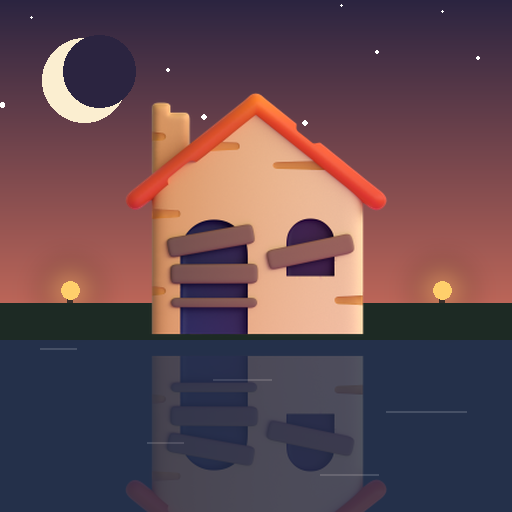

<- all projects

Willowmere
PC
Volume
Live
Merge, restore a lakeside lodge and find out how Aunt Edith really drowned.
Your great-aunt Edith has left you Willowmere Lodge, shut since the summer of 1998, the night she drowned at the end of the dock. Edith never swam. Merge envelopes into love letters and teacups into teapots, fill orders for the cook, the boatman, the painter and the inspector who wrote 'accident', and spend the stars you earn to restore the lodge piece by piece. There are 120 restorations over six rooms and a written mystery in 24 chapters, where every fifth restoration brings back a memory of that night and each room ends with a 'who's lying?' puzzle.